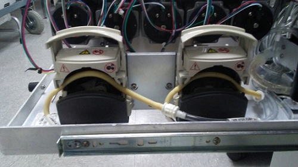
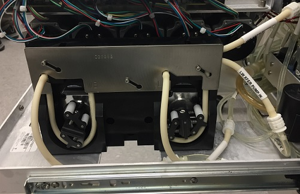
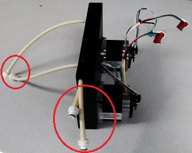
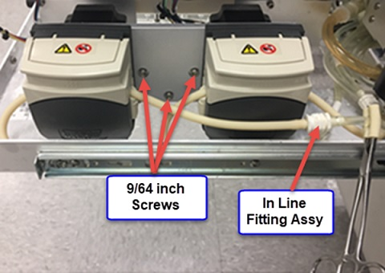
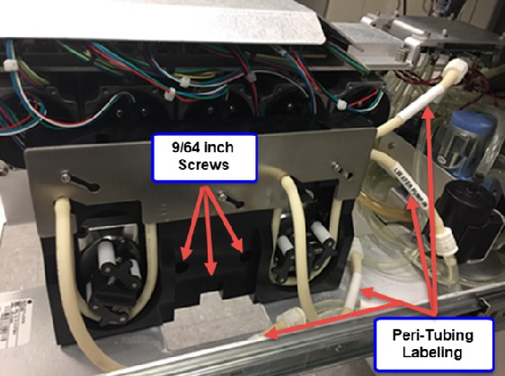

DxI Fluidics: Installing Molded Housing Transfer Pump Assembly
This procedure describes how to install the Molded Housing Transfer Pump Assembly.
Perform this procedure when the peri-tubing has become damaged and the instrument has the original transfer pumps design.
Note:
- Original design transfer pump heads will no longer be available for replacement.

- The IF PCB electrical connections and wiring remain unchanged.
- The new Molded Housing Transfer Pump Assembly is mounted using the current bracketing and screws.

- The end of each of the peristaltic tubing comes with half of the in-line fitting assembly attached.

-
Remove the original design transfer pump assembly.

- Open both upper front covers.
- Bypass the interlock switches.
- Turn the ALL DC POWER switch to OFF at the Power Distribution Board.
- Access the Fluidics Drawer (open the SPU to remove the lower front cover).
- Clamp off the system Tygon (clear) tubing near the in-line fittings to avoid spilling wash buffer or liquid waste.
- Separate each of the 4 in-line fitting assemblies (disconnect the fittings by turning counter clockwise).
- Remove the Peri-Pump Vacuum IF Board Cover.
- Disconnect transfer pump motor and sensor wires from the Peristaltic Pump IF Board (J15/J17 & J16/J18).
-
Remove the mounting bracket screws (three 9/64-inch screws).
Note: For DxI 600 instruments you may need to loosen or remove the Wash Tower Peri-Pump Manifold Assembly from its mounting bracket to allow more clearance when removing the new Transfer Pump Assembly.
- Remove the Transfer Pump Assembly from the instrument.
-
Install the Molded Housing Transfer Pump Assembly.
Caution: The fluid direction for the Molded Housing Transfer Pump Assembly has changed from the original. The new assembly comes with labeled peri-tubing, which will assist in properly connecting the in-line fittings.

- Mount the Molded Housing Transfer Pump Assembly using the three 9/64-in. screws (Re-mount the Wash Tower Peri-Pump Manifold Assembly if removed in step 1-i.).
-
Connect the motor and sensor wires to the Peri-Pump Vacuum IF Board.
- Ensure wires do not make contact with the Wash Tower Pump Motor Sensor Flags.
- Re-Install the Peri-Pump Vacuum IF Board Cover.
- Connect the peri-tubing in-line fitting assemblies (clockwise).
- Remove the clamps from the systems Tygon tubing.
- Install the peri-tubing onto the rotor assemblies (tubing comes dis-engaged).
-
Inspect the newly installed tubing.
- Ensure the tubing is not installed in reverse (causing fluid to flow in the wrong direction).
- Ensure tubing routing will not cause kinking, bunching, or snagging with other system components with the drawer in or out.
- Turn the ALL DC POWER switch to ON at the Power Distribution Board.
- Initialize the instrument.
-
Priming the system.
-
Cycle the transfer pumps in
Device Diagnostics to ensure proper operation.
- Select Diagnostics > Device Diagnostics > Digital Devices > Peristaltic and Vacuum Pumps.
- De-Select the Liquid Waste Reservoir Auto Control On checkbox.
- Select the Liquid Waste Peristaltic On checkbox.
- Allow the pump to operate for 60 seconds ensuring liquid waste is flowing into the liquid waste bottle.
- De-Select the Liquid Waste Peristaltic On checkbox.
- Select the Liquid Waste Reservoir Auto Control On checkbox.
- De-Select the Wash Buffer Reservoir Auto Control On checkbox.
- Select the Bulk WB Supply Peristaltic On checkbox.
- Allow the pump to operate for 60 seconds ensuring wash buffer is flowing into the reservoir.
- De-Select the Bulk WB Supply Peristaltic On checkbox.
- Select the Wash Buffer Reservoir Auto Control On checkbox.
- Select Done.
Caution: The instrument power must be cycled off and on after exiting this diagnostics screen if the following conditions have occurred.- System software version 5.3.1 is installed.
- Liquid waste drawers are installed and in-use.
- Liquid waste peristaltic pump was turned on.
Note: If all three of the above conditions have occurred, the liquid waste bottles could potentially overfill causing a spill on the floor. This can be prevented by powering off the instrument after exiting the "Peristaltic and Vacuum Pumps" diagnostics screen. Use the user interface "Shut-Down Instrument" feature. Exiting and re-launching the AU software will not resolve the issue. Refer to Technical Bulletin SB_IA2018028 for details. - Prime and check for leaks.
- Slide Fluidics Drawer in place and reinstall the lower front cover.
- Close and secure the SPU.
- Remove interlock bypass tools and close the instrument covers.
- Initialize the instrument.
-
Cycle the transfer pumps in
Device Diagnostics to ensure proper operation.
-
Verification.
- Run System Check.
Refer to VSR: Fluidics Drawer document for details.